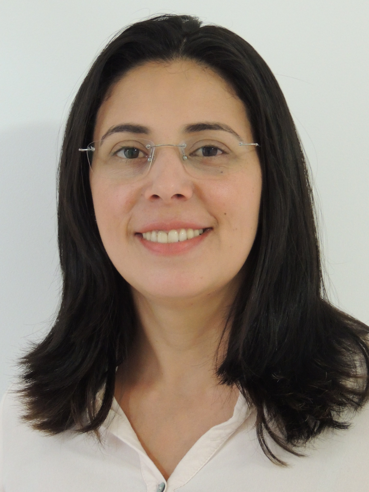

Psicologa Clínica com Formação em Avaliação Neuropsicológica de Crianças e Adolescentes.
Especialista em Psicologia Escolar e Educacional.
Educação Especial e Terapia Sistêmica de Casal e Família.
Pedagoga especialista em educação inclusiva.
Autora do livro Conversando Sobre Crianças.

Cristiane de Lourdes Jacóia Silvestrini
Psicologa, CRP 06/118299
- Graduação em Psicologia pela Universidade Paulista de Sorocaba e em Letras - Português/Inglês pela Universidade de Sorocaba.
- Especialização em Vivências e Comunidades, Berkeley College, New York, NY.
- Especialização em Literatura e Língua Inglesa, Universidade de São Paulo – USP.
- Especialização em Transtorno de Déficit de Atenção/Hiperatividade, Hospital das Clínicas - Faculdade de Medicina da Universidade de São Paulo.
- Curso de Aperfeiçoamento do Pensamento Psicanalítico, Psicologia no Cotidiano. Especialização em Teoria Psicanalítica, Psicologia no Cotidiano. Escola Inglesa - Estudos Psicanalíticos (Melanie Klein/Wilfred Ruprecht Bion/Donald Woods Winnicott).
- Aprimoramento em Winnicott - Teoria e Prática Clínica, Psicologia no Cotidiano. Psicologa no atendimento às crianças, adolescentes e adultos. Psicoterapia de adaptação social e cultural para estrangeiros.
- Cursando Psicopatologia Psicanalítica e Clínica Contemporânea no Instituto Sedes Sapientiae.
Francine Masuela Garcia
Fonoaudióloga, CRFa 14215
- Graduação em Fonoaudiologia
- Pós Graduação em Audiologia Clinica e Ocupacional Aprimoramento em Fonoaudiologia Clínica.
- Atendimento voltado para dificuldades na produção da fala (trocas e omissões), motricidade orofacial, dificuldades na produção da escrita (distúrbios na linguagem escrita, dislexia), falhas no processamento auditivo central.
Adriana Paz Tavares
Psicologa, CRP 06/75045
- Graduação em Psicologia pela Universidade Católica de Santos.
- Aprimoramento e Psicologia do Desenvolvimento pela Universidade Católica de Santos.
- Especialização em Psicopedagogia Clinica e Institucional pela Universidade de Sorocaba.
- Aprimoramento em Psicologia Hospitalar.
- Consultora em Psicologia Escolar e Grupo de Orientação para Pais e Professores.
Helena Gozzano
Terapeuta e jornalista
- Formação em Terapia Sistêmica de Casal e Família pelo Instituto Sistemas Humanos, filiado à Associação Brasileira de Terapia Familiar (ABRATEF).
- Atendimento individual (adultos), casal e família.

Camila T. Iesca Gioria
Psicologa, CRP 06/93725
- Profissional com experiência na área da saúde e educação.
- Atendimento a gestação de alto risco, obesidade mórbida, dependência química e transtornos emocionais.
- Aplicação de testes psicológicos.
- Pós graduada em Psicoterapia Breve pela UNICAMP.
- Pós graduada em Dependência Química pelo CRR-UFSCAR
- Pós graduada em Acompanhamento Pré e pós operatório pelo Instituto Garrido. Membro do Grupo de estudos Diálogos Winnicottianos e GIAPE (Grupo de Pesquisa sobre infância, Arte, Práticas Educativas e Psicossociais) da UFSCAR.
Bárbara Bellaguarda
Massoterapeuta
- Quick Massage.
- Shiatsu Expresso.
- Shiatsu Facial.
- Do-in.
Bruna Maria Mansano
Psicologa, CRP 06/85493
- Graduação pela Universidade Paulista de Sorocaba.
- Aprimoramento em Saúde Mental Comunitária na Infância e Adolescência na Associação Pró-Reintegração Social da Criança.
- Especializanda em Psicologia Clínica pelo Cefas.
- Psicologa da Oficina Terapêutica na Associação Pró-Reintegração Social da Criança.
- Psicoterapeuta Infantil, Adolescente e Adulto.
Miriam Elaine Correa Martins Rodriguez
Psicologa, CRP 06/106404
- Graduação em Psicologia pela Universidade Paulista de Sorocaba.
- Especialização em Psicoterapia Breve Operacionalizada UNIP.
- Especializanda em Psicoterapia Psicanalítica pela USP-SP.
- Aprimoramento em Avaliação Psicológica para Cirurgia Bariátrica.
- Psicoterapia Infantil/Adulto/Casal.
Joslaine Aparecida Santos de Jesus
Psicologa, CRP 06/93663
- Graduação em Psicologia Clinica Universidade Nove de Julho Uninove Centro de diagnóstico neuropsicológico.
- Pós graduação em Neuropsicologia pelo CDN Centro de Diagnóstico.
- Neuropsicológico – UNIFESP.
- Reabilitação Neuropsicológica pelo Ciclo Ceap.
- Psicoterapia Cognitiva Comportamental de Crianças e Adolescentes.
- Atendimentos: Avaliação neuropsicológica; reabilitação neuropsicológica de crianças com TDAH; adultos com dificuldade de memória e concentração; transtorno cognitivo leve ( queixa de memória) e demência; crianças e adolescentes com dificuldade de aprendizagem; transtorno de dificuldade de atenção e hiperatividade.
Flavia Regina Ribeiro Silva
Psicologa, CRP 06/77354
- Graduação em Psicologia pela Universidade Paulista de Sorocaba.
- Especialização em Psicopatologia e Psicooncologia pelo Cefas.
- Especializanda em Psicologia Clínica pelo Cefas.
- Psicologa na Oficina Terapêutica na Associação Pró-Reintegração
Social da Criança.
- Experiência na área da saúde mental.
- Psicoterapeuta Infantil/Adolescente e Adulto.
Marcus Christian Santana Leal Feitoza
Médico, CRM-SP 121.761
- Especialista em Psiquiatria Clínica pela AMB/ABP/CFM
Leticia Rodrigues da Silveira
Psicologa, CRP 06/124364
- Graduação em Psicologia pela Universidade Federal de São Paulo - UNIFESP
- Abordagem Psicanalítica
- Psicoterapia Infantil, Adolescente e Adultos.
Susana do Carmo M.F. Isquierdo
José Antonio Michelleti
Terapeuta, engenheiro e professor
- Formação em Terapia Sistêmica de Casal e Família pelo Instituto Sistemas Humanos Sorocaba
Atendimento de Casal e Família.